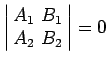

Inhalt Index DeskTop Bronstein

 Geometrie Vektoralgebra und analytische Geometrie Analytische Geometrie der Ebene Gerade
Geometrie Vektoralgebra und analytische Geometrie Analytische Geometrie der Ebene Gerade


Um die Koordinaten des Schnittpunktes zweier Geraden zu berechnen, ist die Lösung des aus ihren Gleichungen zu bildenden Gleichungssystems zu berechnen. Wenn die Geraden durch die Gleichungen
gegeben sind, dann gilt
| (3.331b) |
Wenn  ist, dann sind die Geraden parallel. Ist dann fallen die Geraden zusammen.
Wenn eine dritte Gerade mit der Gleichung
| A3x + B3y + C3 = 0 | (3.332a) |
| (3.332b) |
erfüllt sein.
Die Gleichung
beschreibt alle Geraden die durch den Schnittpunkt P0(x0,y0) der beiden Geraden (3.331a) hindurchgehen. Durch (3.332c) wird ein Geradenbüschel mit dem Träger P0(x0,y0) definiert. Wenn die Gleichungen der ersten beiden Geraden in Normalform gegeben sind, dann erhält man für  die Gleichungen der Winkelhalbierenden der von den beiden Geraden eingeschlossenen Winkel.
die Gleichungen der Winkelhalbierenden der von den beiden Geraden eingeschlossenen Winkel.